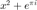

Contents
clear clc
Initialization
These settings initialize the program, and our subject to change.
% SET: paths addpath(genpath('Store_TDMS_Data')); % for reading tdms files addpath(genpath('Fits')); % for fitting Lorentzian to data addpath(genpath('Plots')); % for plotting data addpath(genpath('Peaks')); % for setting peak values addpath(genpath('Data_Manipulation')); % for reading tdms files addpath(genpath('GUI')); % SET: file paths direc = '../../2-Files_To_Analyze/'; f1 = '31 May 18 TaV2'; f2 = '15 May 18 BalrO3/'; f3 = 'CoNb2O6 061218/'; f4 = 'More CoNb206/'; path_to_tdms_files = [direc, f1]; clear f1 f2 f3 f4 dir direc
Read In Data
% STORE: data from tdms files tdms_data = TDMS_Load(path_to_tdms_files); fprintf(' --- Finished: Reading Data ---\n\n')
Error using TDMS_Load (line 20) The directory passed in could not be reached from current path. Error in main (line 29) tdms_data = TDMS_Load(path_to_tdms_files);
Set Struct
%tdms_data = tdms_data([14,25]); % GET: plot info plot_info = Get_Plot_Struct(); % MODIFY: plot info plot_info.preprocess = {@Process_Plot_Data}; plot_info.raw = 1; plot_info.mag = 1; %plot_info.plot_width = 1; %plot_info.peaks_raw_given = [1,1]; plot_info.peaks_mag_given = [1,1]; plot_info.peaks_raw_set = [1,1]; %plot_info.peaks_mag_set = [1,1]; %plot_info.peaks_tracked = 1; % SET: plot info [tdms_data.plot_info] = deal(plot_info); disp(" -- Finished Setting Plot Struct ---") clear plot_info
Process The Data
tdms_data = Process_Data(tdms_data);
fprintf(" --- Finished processing data --- \n\n")
Track Peaks
% Get: tracked peaks, and the intervals used to find them. %freq_ref = 8.812 *10^5; peak_str = 'peaks_mag_given'; interval_size = 1.5*10^4; [peaks_tracked,cell_intervals] = Track_Peaks_Interval( ... {tdms_data.(peak_str)}, ... tdms_data(1).plot_info.track_freq, ... tdms_data(1).plot_info.track_interval); [tdms_data.peaks_tracked] = deal(peaks_tracked{:}); clear peaks_tracked disp(" --- Finished Tracking Peaks ---")
Plot
MONOSPACED TEXT Interesting stuff.... I guess  MathWorks
Sub_Plots(tdms_data);
disp(" --- Finished: Plotting ---")
Peak Analysis
Peak_Analyzer(tdms_data); clear freq_ref peak_str peaks_of_interest peak_temps disp("Finished Analyzing Peaks")
FINISHED
disp("[Finished Script]")